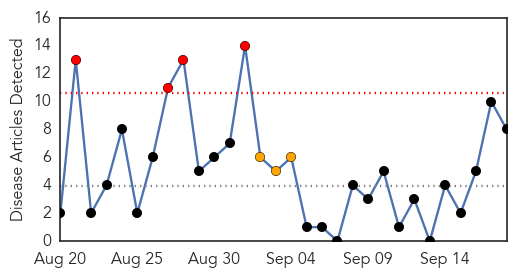

West Nile Virus
30-Day Web Trend
1 alerts, 0 warnings
30-Day Twitter Trend
0 alerts, 0 warnings

Article Locations

Article Confidences

Top Articles:
- 0.990
- Two cases of West Nile Virus confirmed in Oakland County
- 0.988
- Case of West Nile virus confirmed in Algarve
- 0.936
- Local man’s sick horse could have West Nile
- 0.922
- Two deaths in St. Louis area from West Nile virus
- 0.852
- Dr. Deborah Asnis Passes Away At 59 Due To Breast Cancer
- 0.839
- West Nile confirmed in Jackson County
- 0.613
- Health officials investigating dead crows in Millwood
Top Tweets:
-
No tweets found for Sep 18, 2015
Measles
30-Day Web Trend
4 alerts, 3 warnings

30-Day Twitter Trend
0 alerts, 0 warnings

Article Locations

Article Confidences

Top Articles:
- 0.750
- Childhood vaccines debate rekindled at GOP presidential debate
- 0.747
- Childhood Vaccines Debate Rekindled at GOP Presidential Debate
- 0.737
- 5 myths surrounding vaccines -- and the reality
- 0.654
- What the News Isn�t Saying About Vaccine-Autism Studies
- 0.632
- Vaccine issue arises at GOP debate, to doctors' dismay
- 0.631
- Spacing Out Vaccines Isn’t Good for Kids
- 0.574
- Vaccines back in the headlines – here's what the experts say
- 0.513
- Sadly, there's no vaccine for stupidity
Top Tweets:
-
No tweets found for Sep 18, 2015